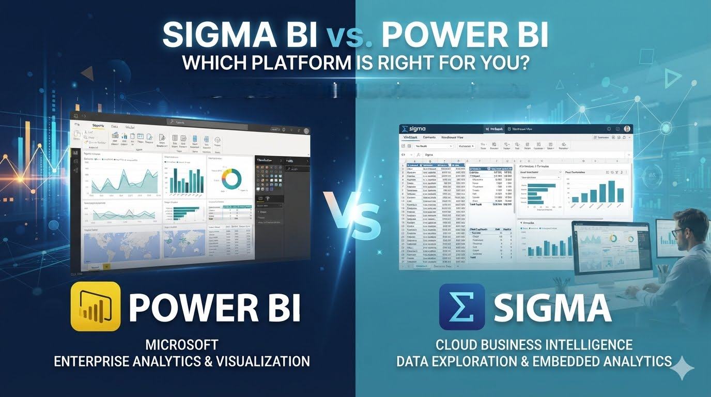

--- 
layout: null
---
<div style="background-color: #e0f2fe; background-image: linear-gradient(180deg, #e0f2fe 0%, #bae6fd 100%); color: #0f172a; padding: 45px 30px; font-family: -apple-system, BlinkMacSystemFont, 'Segoe UI', Helvetica, Arial, sans-serif; min-height: 100vh; border-radius: 8px; max-width: 800px; margin: 0 auto; line-height: 1.7;"> 

  <!-- COVER IMAGE -->
  <div align="center" style="margin-bottom: 40px;">
    
  </div>

  <!-- ARTICLE TITLE -->
  <h1 style="color: #0369a1; font-size: 32px; font-weight: 800; margin-bottom: 12px; line-height: 1.3; border-bottom: none;">
    Sigma BI vs. Power BI: A Practical Comparison for Modern Cloud Analytics
  </h1>

  <p style="font-size: 16px; color: #475569; margin-top: 0; margin-bottom: 28px; font-style: italic;">
    Understanding where Sigma excels, where Power BI remains stronger, and how the two platforms can complement each other.
  </p>

  <!-- INTRODUCTION -->
  <p style="text-indent: 30px; font-size: 17px; line-height: 1.8; margin-bottom: 22px;">
    Sigma Computing and Snowflake are independent companies, but Sigma has developed a strong position within the Snowflake ecosystem.
    In 2026, Sigma was named Snowflake’s Business Intelligence Product Partner of the Year for the fourth consecutive year.
    This recognition reflects Sigma’s close alignment with cloud-warehouse analytics, especially for organizations that want business
    users to explore governed data without moving it into local spreadsheets or a separate analytical engine.
  </p>

  <p style="text-indent: 30px; font-size: 17px; line-height: 1.8; margin-bottom: 22px;">
    Sigma is a cloud-native business intelligence and analytics platform designed for organizations whose data resides in modern cloud
    platforms such as Snowflake, Databricks, Google BigQuery, and Amazon Redshift. Its defining feature is a spreadsheet-style interface
    that allows users to work with formulas, pivot tables, filters, groupings, and detailed records while the underlying computations are
    executed in the connected cloud data platform.
  </p>

  <div style="
    margin: 28px 0;
    padding: 20px 24px;
    background-color: rgba(255,255,255,0.64);
    border-left: 5px solid #0369a1;
    border-radius: 8px;
    box-shadow: 0 5px 15px rgba(3,105,161,0.08);
    font-size: 18px;
    font-weight: 750;
    color: #0f172a;
    text-align: center;
  ">
    Sigma can be described informally as “Excel on steroids”: a familiar spreadsheet experience without Excel’s worksheet row limit,
    supported by cloud-warehouse scale and enterprise governance.
  </div>

  <p style="text-indent: 30px; font-size: 17px; line-height: 1.8; margin-bottom: 22px;">
    The phrase does not mean that Sigma is merely an online spreadsheet. Excel worksheets are limited to 1,048,576 rows, whereas Sigma
    leaves the data in the warehouse and generates queries against it. Business users can therefore work with very large datasets without
    downloading every record to a desktop file. Routine analysis can often be performed without writing SQL, DAX, or conventional application
    code, although technical teams may still use SQL and warehouse engineering to prepare governed data sources.
  </p>

  <!-- HOW SIGMA WORKS -->
  <h2 style="color: #0369a1; font-size: 24px; font-weight: 700; margin-top: 34px; margin-bottom: 15px;">
    How Sigma Works
  </h2>

  <p style="text-indent: 30px; font-size: 17px; line-height: 1.8; margin-bottom: 22px;">
    Sigma is architected around live warehouse data. Spreadsheet actions such as filtering, grouping, pivoting, and applying formulas are
    translated into the SQL dialect of the connected data platform. The query runs where the data already lives, and the results are returned
    to the browser. This approach minimizes unnecessary data movement and allows the organization to retain its existing warehouse security,
    performance controls, and governance policies.
  </p>

  <div style="
    display: flex;
    flex-wrap: wrap;
    justify-content: center;
    align-items: center;
    gap: 10px;
    margin: 28px 0;
    padding: 18px;
    background-color: rgba(255,255,255,0.55);
    border: 1px solid rgba(3,105,161,0.22);
    border-radius: 10px;
  ">
    <div style="padding: 10px 14px; background-color: #ffffff; border-radius: 7px; font-weight: 700;">Cloud Data Platform</div>
    <div style="font-size: 24px; color: #0369a1; font-weight: 900;">→</div>
    <div style="padding: 10px 14px; background-color: #ffffff; border-radius: 7px; font-weight: 700;">Governed Data Model</div>
    <div style="font-size: 24px; color: #0369a1; font-weight: 900;">→</div>
    <div style="padding: 10px 14px; background-color: #ffffff; border-radius: 7px; font-weight: 700;">Sigma Workbook or App</div>
    <div style="font-size: 24px; color: #0369a1; font-weight: 900;">→</div>
    <div style="padding: 10px 14px; background-color: #ffffff; border-radius: 7px; font-weight: 700;">Business User</div>
  </div>

  <!-- GOVERNANCE -->
  <h2 style="color: #0369a1; font-size: 24px; font-weight: 700; margin-top: 34px; margin-bottom: 15px;">
    Governance and Security
  </h2>

  <p style="text-indent: 30px; font-size: 17px; line-height: 1.8; margin-bottom: 18px;">
    Sigma combines application-level controls with the governance policies of the underlying data platform. Important capabilities include:
  </p>

  <div style="display: grid; grid-template-columns: repeat(auto-fit, minmax(220px, 1fr)); gap: 14px; margin: 20px 0 28px 0;">
    <div style="background-color: rgba(255,255,255,0.62); padding: 16px; border-radius: 8px; border: 1px solid rgba(3,105,161,0.18);">
      <b style="color: #0369a1;">Role-based access control</b><br>
      Permissions can be assigned according to account type, team, responsibility, and level of access.
    </div>
    <div style="background-color: rgba(255,255,255,0.62); padding: 16px; border-radius: 8px; border: 1px solid rgba(3,105,161,0.18);">
      <b style="color: #0369a1;">Row- and column-level security</b><br>
      Sensitive records and fields can be restricted according to user identity, team membership, or assigned attributes.
    </div>
    <div style="background-color: rgba(255,255,255,0.62); padding: 16px; border-radius: 8px; border: 1px solid rgba(3,105,161,0.18);">
      <b style="color: #0369a1;">SSO and provisioning</b><br>
      Enterprise authentication and automated user administration can be integrated with an organization’s identity provider.
    </div>
    <div style="background-color: rgba(255,255,255,0.62); padding: 16px; border-radius: 8px; border: 1px solid rgba(3,105,161,0.18);">
      <b style="color: #0369a1;">Workbook and folder permissions</b><br>
      Content access can be governed at organizational, folder, workbook, and data-source levels.
    </div>
    <div style="background-color: rgba(255,255,255,0.62); padding: 16px; border-radius: 8px; border: 1px solid rgba(3,105,161,0.18);">
      <b style="color: #0369a1;">Auditability</b><br>
      Administrators can review activity such as sign-ins, content access, sharing, exports, and permission changes.
    </div>
    <div style="background-color: rgba(255,255,255,0.62); padding: 16px; border-radius: 8px; border: 1px solid rgba(3,105,161,0.18);">
      <b style="color: #0369a1;">Version history</b><br>
      Published versions and draft changes can be reviewed to identify who changed a workbook, what changed, and when.
    </div>
  </div>

  <!-- WHERE SIGMA SHINES -->
  <h2 style="color: #0369a1; font-size: 24px; font-weight: 700; margin-top: 34px; margin-bottom: 15px;">
    Where Sigma Shines
  </h2>

  <ol style="font-size: 17px; line-height: 1.75; padding-left: 25px; margin-bottom: 28px;">
    <li style="margin-bottom: 12px;">
      <b>Cloud data platforms are central to the analytics strategy.</b>
      Sigma is especially attractive when Snowflake or Databricks is the organization’s primary analytical platform.
    </li>
    <li style="margin-bottom: 12px;">
      <b>Business users rely heavily on Excel.</b>
      Existing spreadsheet skills transfer naturally to formulas, pivots, filters, and table-based analysis.
    </li>
    <li style="margin-bottom: 12px;">
      <b>Users need detailed, warehouse-scale exploration.</b>
      Analysts can move from summarized results to detailed rows without first exporting the entire dataset.
    </li>
    <li style="margin-bottom: 12px;">
      <b>The organization wants governed self-service analytics.</b>
      Business teams can answer more questions independently while remaining within managed data and security boundaries.
    </li>
    <li style="margin-bottom: 12px;">
      <b>Internal or customer-facing data applications are needed.</b>
      Sigma workbooks can support interactive operational workflows and embedded analytical experiences.
    </li>
    <li style="margin-bottom: 12px;">
      <b>Writeback is a core requirement.</b>
      Input tables allow authorized users to enter or update governed information for planning, forecasting, commentary,
      approvals, and operational processes.
    </li>
  </ol>

  <!-- MODELING -->
  <h2 style="color: #0369a1; font-size: 24px; font-weight: 700; margin-top: 34px; margin-bottom: 15px;">
    Does Sigma Have Data Modeling?
  </h2>

  <p style="text-indent: 30px; font-size: 17px; line-height: 1.8; margin-bottom: 22px;">
    Yes. Sigma supports data models, relationships, joins, calculated columns, reusable metrics, governed sources, and security rules.
    Relationships can define how tables are connected so that business users can work with related data without manually creating an ad hoc
    join every time.
  </p>

  <p style="text-indent: 30px; font-size: 17px; line-height: 1.8; margin-bottom: 22px;">
    However, Sigma’s modeling philosophy differs from Power BI’s. Power BI is built around a sophisticated semantic model that can contain
    star-schema relationships, reusable DAX measures, calculated tables, calculation groups, time-intelligence logic, complex filter context,
    and multiple storage modes. Sigma provides a lighter semantic layer and generally benefits from business-ready tables, views, dimensional
    models, or dbt models already being established in the warehouse.
  </p>

  <div style="
    margin: 25px 0;
    padding: 18px 22px;
    background-color: rgba(255,255,255,0.64);
    border: 1px solid rgba(3,105,161,0.25);
    border-radius: 8px;
    font-size: 17px;
  ">
    <b style="color: #0369a1;">The practical distinction:</b><br>
    Power BI allows substantial business logic to live inside its semantic model. Sigma encourages more of that logic to remain close to
    the cloud data platform, with Sigma adding governed relationships, metrics, and user-friendly analysis on top.
  </div>

  <!-- LIMITATIONS -->
  <h2 style="color: #0369a1; font-size: 24px; font-weight: 700; margin-top: 34px; margin-bottom: 15px;">
    Potential Limitations of Sigma
  </h2>

  <ol style="font-size: 17px; line-height: 1.75; padding-left: 25px; margin-bottom: 28px;">
    <li style="margin-bottom: 12px;">
      <b>Warehouse compute cost.</b>
      Live queries, high concurrency, inefficient joins, and poorly designed workbooks can increase consumption in Snowflake,
      Databricks, or another connected platform.
    </li>
    <li style="margin-bottom: 12px;">
      <b>Dependence on a well-designed data foundation.</b>
      Sigma has modeling capabilities, but complex enterprise logic is often more maintainable when curated in the warehouse or dbt layer.
    </li>
    <li style="margin-bottom: 12px;">
      <b>Visualization depth.</b>
      Sigma offers useful dashboards and charts, but Power BI and Tableau generally provide broader visual customization and storytelling options.
    </li>
    <li style="margin-bottom: 12px;">
      <b>Advanced semantic calculations.</b>
      Sigma does not provide a direct equivalent to the full depth of DAX, calculation groups, and Power BI filter-context behavior.
    </li>
    <li style="margin-bottom: 12px;">
      <b>Pricing transparency.</b>
      Sigma documents its license tiers, but public list pricing is not as straightforward as Power BI’s commonly published per-user offerings.
    </li>
  </ol>

  <!-- COMPARISON TABLE -->
  <h2 style="color: #0369a1; font-size: 24px; font-weight: 700; margin-top: 34px; margin-bottom: 15px;">
    Sigma BI vs. Power BI
  </h2>

  <div style="overflow-x: auto; margin: 20px 0 30px 0; border-radius: 9px; box-shadow: 0 6px 18px rgba(3,105,161,0.10);">
    <table style="width: 100%; min-width: 650px; border-collapse: collapse; background-color: rgba(255,255,255,0.72); font-size: 15px;">
      <thead>
        <tr>
          <th style="text-align: left; padding: 13px; background-color: #0369a1; color: #ffffff; border: 1px solid #cbd5e1;">Capability</th>
          <th style="text-align: left; padding: 13px; background-color: #047857; color: #ffffff; border: 1px solid #cbd5e1;">Sigma BI</th>
          <th style="text-align: left; padding: 13px; background-color: #b45309; color: #ffffff; border: 1px solid #cbd5e1;">Power BI</th>
        </tr>
      </thead>
      <tbody>
        <tr>
          <td style="padding: 12px; border: 1px solid #cbd5e1; font-weight: 700;">Primary experience</td>
          <td style="padding: 12px; border: 1px solid #cbd5e1;">Spreadsheet-style analysis</td>
          <td style="padding: 12px; border: 1px solid #cbd5e1;">Reports, dashboards, and semantic models</td>
        </tr>
        <tr>
          <td style="padding: 12px; border: 1px solid #cbd5e1; font-weight: 700;">Processing approach</td>
          <td style="padding: 12px; border: 1px solid #cbd5e1;">Live cloud-platform query pushdown</td>
          <td style="padding: 12px; border: 1px solid #cbd5e1;">Import, DirectQuery, Direct Lake, or live connection</td>
        </tr>
        <tr>
          <td style="padding: 12px; border: 1px solid #cbd5e1; font-weight: 700;">Business-user adoption</td>
          <td style="padding: 12px; border: 1px solid #cbd5e1;">Very strong for Excel-oriented users</td>
          <td style="padding: 12px; border: 1px solid #cbd5e1;">Strong, but often dependent on a prepared model</td>
        </tr>
        <tr>
          <td style="padding: 12px; border: 1px solid #cbd5e1; font-weight: 700;">Semantic modeling</td>
          <td style="padding: 12px; border: 1px solid #cbd5e1;">Available, but comparatively lighter</td>
          <td style="padding: 12px; border: 1px solid #cbd5e1;">Highly advanced and central to the platform</td>
        </tr>
        <tr>
          <td style="padding: 12px; border: 1px solid #cbd5e1; font-weight: 700;">Calculation language</td>
          <td style="padding: 12px; border: 1px solid #cbd5e1;">Spreadsheet formulas and generated SQL</td>
          <td style="padding: 12px; border: 1px solid #cbd5e1;">DAX, Power Query, and source SQL</td>
        </tr>
        <tr>
          <td style="padding: 12px; border: 1px solid #cbd5e1; font-weight: 700;">Visualization</td>
          <td style="padding: 12px; border: 1px solid #cbd5e1;">Good for analysis and operational dashboards</td>
          <td style="padding: 12px; border: 1px solid #cbd5e1;">Stronger customization and visual ecosystem</td>
        </tr>
        <tr>
          <td style="padding: 12px; border: 1px solid #cbd5e1; font-weight: 700;">Writeback</td>
          <td style="padding: 12px; border: 1px solid #cbd5e1;">Native strength through input tables and applications</td>
          <td style="padding: 12px; border: 1px solid #cbd5e1;">Usually requires Power Apps, automation, or custom solutions</td>
        </tr>
        <tr>
          <td style="padding: 12px; border: 1px solid #cbd5e1; font-weight: 700;">Best ecosystem fit</td>
          <td style="padding: 12px; border: 1px solid #cbd5e1;">Snowflake, Databricks, and cloud data platforms</td>
          <td style="padding: 12px; border: 1px solid #cbd5e1;">Microsoft Fabric, Azure, Microsoft 365, and Power Platform</td>
        </tr>
      </tbody>
    </table>
  </div>

  <!-- COMPLEMENTARY -->
  <h2 style="color: #0369a1; font-size: 24px; font-weight: 700; margin-top: 34px; margin-bottom: 15px;">
    Complementary Rather Than Competitive
  </h2>

  <p style="text-indent: 30px; font-size: 17px; line-height: 1.8; margin-bottom: 22px;">
    In an organization where Power BI or Tableau is already established, Sigma does not necessarily need to replace the existing platform.
    It can serve as a complementary self-service and operational analytics layer. Users who currently export data into Excel can instead work
    directly with governed warehouse data, while Power BI continues to deliver standardized executive dashboards, enterprise metrics, and
    visually polished reporting.
  </p>

  <div style="display: grid; grid-template-columns: repeat(auto-fit, minmax(245px, 1fr)); gap: 16px; margin: 22px 0 30px 0;">
    <div style="background-color: rgba(240,253,244,0.82); border: 1px solid #86efac; border-radius: 9px; padding: 18px;">
      <h3 style="color: #166534; margin-top: 0; margin-bottom: 10px; font-size: 19px;">Use Sigma for</h3>
      <ul style="padding-left: 20px; margin-bottom: 0;">
        <li>Detailed warehouse exploration</li>
        <li>Excel-like self-service analysis</li>
        <li>Planning and forecasting</li>
        <li>Writeback workflows</li>
        <li>Internal and embedded data applications</li>
      </ul>
    </div>
    <div style="background-color: rgba(255,251,235,0.84); border: 1px solid #fcd34d; border-radius: 9px; padding: 18px;">
      <h3 style="color: #92400e; margin-top: 0; margin-bottom: 10px; font-size: 19px;">Use Power BI for</h3>
      <ul style="padding-left: 20px; margin-bottom: 0;">
        <li>Enterprise semantic models</li>
        <li>Advanced DAX calculations</li>
        <li>Executive dashboards</li>
        <li>Highly customized visual reporting</li>
        <li>Microsoft Fabric and Power Platform integration</li>
      </ul>
    </div>
  </div>

  <!-- CONCLUSION -->
  <h2 style="color: #0369a1; font-size: 24px; font-weight: 700; margin-top: 34px; margin-bottom: 15px;">
    Conclusion
  </h2>

  <p style="text-indent: 30px; font-size: 17px; line-height: 1.8; margin-bottom: 22px;">
    Sigma BI offers a compelling approach to modern self-service analytics, particularly for organizations that have invested heavily in
    Snowflake, Databricks, or another cloud data platform. Its spreadsheet-style interface allows business users to transfer familiar Excel
    skills into a governed enterprise environment and analyze large datasets without relying on desktop downloads or waiting for a BI developer
    to answer every new question.
  </p>

  <p style="text-indent: 30px; font-size: 17px; line-height: 1.8; margin-bottom: 22px;">
    Power BI remains stronger in advanced semantic modeling, DAX, visualization, and Microsoft ecosystem integration. Sigma stands out in
    spreadsheet-style exploration, direct warehouse analysis, native writeback, and data-application development. For many enterprises,
    the most effective strategy may therefore be to use Power BI for standardized reporting and Sigma for governed self-service and operational
    analytics.
  </p>

  <div style="
    margin: 30px 0 36px 0;
    padding: 20px 24px;
    background-color: #0369a1;
    color: #ffffff;
    border-radius: 9px;
    text-align: center;
    box-shadow: 0 8px 22px rgba(3,105,161,0.20);
    font-size: 18px;
    font-weight: 750;
  ">
    Power BI is primarily a semantic modeling and reporting platform. Sigma is a warehouse-native analytical workspace that brings
    spreadsheet familiarity to enterprise-scale cloud data.
  </div>

  <!-- REFERENCES -->
  <div align="center">
    <h2 style="color: #0369a1; font-size: 22px; font-weight: 700; border-bottom: none; margin-bottom: 20px;">
      References
    </h2>
  </div>

  <ul style="list-style-type: none; padding-left: 0; font-size: 15px; line-height: 1.65;">
    <li style="margin-bottom: 15px;">
      <b>Microsoft. (n.d.).</b> <i>Excel specifications and limits.</i>
      <a href="https://support.microsoft.com/en-us/excel/excel-specifications-and-limits"
         style="color: #025a87; font-weight: 600; text-decoration: underline;">Open Source</a>
    </li>
    <li style="margin-bottom: 15px;">
      <b>Microsoft. (2025).</b> <i>Power BI semantic models.</i>
      <a href="https://learn.microsoft.com/en-us/fabric/data-warehouse/semantic-models"
         style="color: #025a87; font-weight: 600; text-decoration: underline;">Open Source</a>
    </li>
    <li style="margin-bottom: 15px;">
      <b>Microsoft. (2025).</b> <i>Model relationships in Power BI Desktop.</i>
      <a href="https://learn.microsoft.com/en-us/power-bi/transform-model/desktop-relationships-understand"
         style="color: #025a87; font-weight: 600; text-decoration: underline;">Open Source</a>
    </li>
    <li style="margin-bottom: 15px;">
      <b>Sigma Computing. (2026, June 2).</b>
      <i>Sigma named 2026 Business Intelligence Snowflake Product Partner of the Year.</i>
      <a href="https://www.sigmacomputing.com/resources/announcements/sigma-snowflake-partner-of-the-year-2026"
         style="color: #025a87; font-weight: 600; text-decoration: underline;">Open Source</a>
    </li>
    <li style="margin-bottom: 15px;">
      <b>Sigma Computing. (n.d.).</b> <i>Architecture: Architected for live warehouse data.</i>
      <a href="https://www.sigmacomputing.com/product/architecture"
         style="color: #025a87; font-weight: 600; text-decoration: underline;">Open Source</a>
    </li>
    <li style="margin-bottom: 15px;">
      <b>Sigma Computing. (n.d.).</b> <i>Create and manage data models.</i>
      <a href="https://help.sigmacomputing.com/docs/create-and-manage-data-models"
         style="color: #025a87; font-weight: 600; text-decoration: underline;">Open Source</a>
    </li>
    <li style="margin-bottom: 15px;">
      <b>Sigma Computing. (n.d.).</b> <i>Define relationships in data models.</i>
      <a href="https://help.sigmacomputing.com/docs/define-relationships-in-data-models"
         style="color: #025a87; font-weight: 600; text-decoration: underline;">Open Source</a>
    </li>
    <li style="margin-bottom: 15px;">
      <b>Sigma Computing. (n.d.).</b> <i>Input tables overview.</i>
      <a href="https://help.sigmacomputing.com/docs/intro-to-input-tables"
         style="color: #025a87; font-weight: 600; text-decoration: underline;">Open Source</a>
    </li>
    <li style="margin-bottom: 15px;">
      <b>Sigma Computing. (n.d.).</b> <i>Set up row-level security.</i>
      <a href="https://help.sigmacomputing.com/docs/set-up-row-level-security"
         style="color: #025a87; font-weight: 600; text-decoration: underline;">Open Source</a>
    </li>
    <li style="margin-bottom: 15px;">
      <b>Sigma Computing. (n.d.).</b> <i>Workbook versions and version history.</i>
      <a href="https://help.sigmacomputing.com/docs/workbook-versions-and-version-history"
         style="color: #025a87; font-weight: 600; text-decoration: underline;">Open Source</a>
    </li>
  </ul>

  <!-- ==================================================== -->
  <!--              CUSDIS COMMENT SECTION                  -->
  <!-- ==================================================== -->

  <div style="
    max-width: 100%;
    margin: 35px auto 20px auto;
    padding: 18px 20px;
    background-color: rgba(255,255,255,0.55);
    border: 1.5px solid rgba(3,105,161,0.25);
    border-radius: 8px;
    box-shadow: inset 0 1px 3px rgba(0,0,0,0.08);
    min-height: 260px;
    overflow: visible;
  ">

    <h3 style="
      color: #0369a1;
      font-size: 20px;
      font-weight: 700;
      margin-top: 0;
      margin-bottom: 16px;
      border-bottom: 2px solid rgba(3,105,161,0.22);
      padding-bottom: 8px;
    ">
      💬 Leave your comments here
    </h3>

    <div style="
      width: 100%;
      min-height: 220px;
      overflow: visible;
    ">
      <div id="cusdis_thread"
        data-host="https://cusdis.com"
        data-app-id="28edf075-3a11-48a9-8654-f0b3b3a791fd"
        data-page-id="Sigma-BI-vs-Power-BI-Comparison"
        data-page-url="https://bishwarai5-commits.github.io/BishwaR-Page/sigma.html"
        data-page-title="Sigma BI vs. Power BI Comparison"
        data-theme="light">
      </div>
    </div>

  </div>

  <script async defer src="https://cusdis.com/js/cusdis.es.js"></script>

  <!-- ==================================================== -->

  <hr style="border: 0; height: 1px; background-image: linear-gradient(to right, rgba(3,105,161,0), rgba(3,105,161,0.2), rgba(3,105,161,0)); margin-top: 10px; margin-bottom: 20px;">

  <!-- BACK TO HOME BUTTON -->
  <div align="center" style="margin-top: 25px;">
    <a href="https://bishwarai5-commits.github.io/BishwaR-Page/" style="display: inline-block; padding: 12px 24px; font-size: 16px; font-weight: bold; color: #ffffff; background-color: #0369a1; border-radius: 6px; text-decoration: none; box-shadow: 0 4px 12px rgba(3,105,161,0.2);">← Back to Homepage</a>
  </div>

</div>